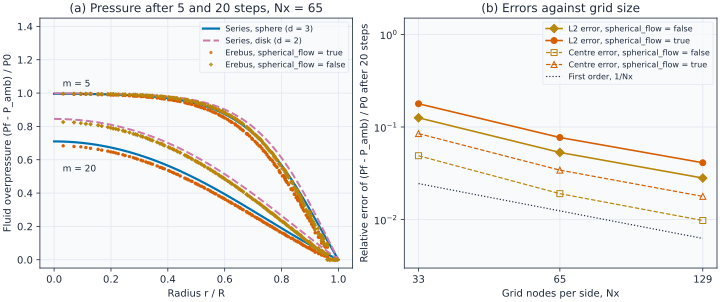
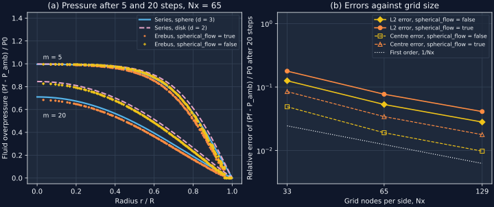

Spherical Pressure Diffusion
What this page checks
This page checks the poroelastic storage terms of the hydromechanical solve of Erebus.jl in a time-dependent problem. When the pore fluid pressure $P_f$, in Pa, of a porous rock changes, the fluid and the solid grains compress or expand. The pore space also opens or closes. The amount of fluid that a unit volume of rock takes up per unit change of $P_f$ is the storage coefficient $S$, in Pa⁻¹. With the storage the pore pressure does not settle at once: it diffuses, at the rate $D = k / (\mu S)$, in m²/s. Here $k$ is the permeability in m² and $\mu$ the fluid viscosity in Pa s. Validation here means that we run the code on a case where we know the right answer from another source. The test then checks that the code gives that answer. If these terms were wrong, the time that a pore overpressure needs to drain from a planetesimal would be wrong. The venting rate and the pore pressure at which the rock fractures would then be wrong too.
The page checks 3 parts of the solve:
- the compressibility terms of the continuity rows of the solid and of the fluid in a rigid matrix;
- the right-hand sides of both rows, which carry the pressures of the previous time step;
- the spherical face weights of the continuity row of the fluid, which the option
geometry.spherical_flowturns on, in a transient problem.
The continuity row of the solid is the $P_t$ row, with the total pressure $P_t$ in Pa. The continuity row of the fluid is the $P_f$ row. In the $P_t$ row the case checks the Biot-Willis coefficient $K_{BW}$. In the $P_f$ row it checks the full storage coefficient $S$. The prefactor $\beta_d / \Delta t$ of the storage term of the $P_t$ row cancels and is not tested. Here $\beta_d$ is the drained compressibility in Pa⁻¹ and $\Delta t$ the time step in s. The other validation cases run with all compressibilities 0 or on the first time step, where the solver sets them to 0. This case runs from the second time step on, so the compressibilities enter both rows.
The page has one case, which it runs with the option on and off. The case says why the check exists, what it tests, how we know the right answer and why it matters. The box "Test details" at the end of the case gives the reference, the tolerance, the test ids and the command.
How the storage terms enter the continuity rows. A continuity row is the row of the linear system that holds the volume balance of one phase in one cell. The $P_t$ row and the $P_f$ row of an inside cell are
\[\nabla \cdot \mathbf{v}_s + \frac{P_t - P_f}{\zeta (1 - \phi)} + \frac{\beta_d}{\Delta t} \left[ (P_t - P_t^0) - K_{BW} (P_f - P_f^0) \right] = 0,\]
\[\nabla \cdot \mathbf{q} - \frac{P_t - P_f}{\zeta (1 - \phi)} - \frac{\beta_d K_{BW}}{\Delta t} \left[ (P_t - P_t^0) - \frac{P_f - P_f^0}{B} \right] = 0.\]
Here $\mathbf{v}_s$ is the solid velocity in m/s, $\zeta$ the compaction viscosity in Pa s and $\phi$ the porosity. The Darcy flux is $\mathbf{q} = -(k / \mu) \nabla P_f$, in m/s. The pressures of the previous step are $P_t^0$ and $P_f^0$. The coefficients are the drained compressibility $\beta_d$, the Biot-Willis coefficient $K_{BW}$ and the Skempton coefficient $B$:
\[\beta_d = \frac{\beta_\phi + \beta_s}{1 - \phi}, \qquad K_{BW} = 1 - \frac{\beta_s}{\beta_d}, \qquad \frac{1}{B} = 1 + \frac{\phi (\beta_f - \beta_s)}{\beta_d - \beta_s}.\]
Here $\beta_\phi$ is the pore compressibility, $\beta_s$ the solid compressibility and $\beta_f$ the fluid compressibility, all in Pa⁻¹. In a rigid matrix the $P_t$ row gives $P_t - P_t^0 = K_{BW} (P_f - P_f^0)$. The $P_f$ row then becomes a diffusion equation with the storage coefficient $S$:
\[S \frac{P_f - P_f^0}{\Delta t} = \nabla \cdot \left( \frac{k}{\mu} \nabla P_f \right), \qquad S = \beta_d K_{BW} \left( \frac{1}{B} - K_{BW} \right).\]
The case has $S = 1.3 \times 10^{-10}$ Pa⁻¹ and $K_{BW} = 0.6$.
How the storage coefficient follows from the 2 rows
In a rigid matrix $\nabla \cdot \mathbf{v}_s$ and $1 / \zeta$ go to 0. The $P_t$ row then gives $P_t - P_t^0 = K_{BW} (P_f - P_f^0)$ for any nonzero prefactor $\beta_d / \Delta t$, so this prefactor drops out. With this relation the $P_f$ row becomes the diffusion equation above. With $\beta_d K_{BW} = \beta_d - \beta_s$ the storage coefficient is
\[S = \phi \beta_f + (1 - \phi) \frac{\beta_\phi \beta_s}{\beta_\phi + \beta_s}, \qquad K_{BW} = \frac{\beta_\phi + \phi \beta_s}{\beta_\phi + \beta_s}.\]
The solver clamps $\beta_\phi$ and $\beta_s$ to non-negative values, the porosity to $[\phi_\mathrm{min}, \phi_\mathrm{max}]$ and $K_{BW}$ and $B$ to $[0, 1]$. Here $\phi_\mathrm{min}$ and $\phi_\mathrm{max}$ are the lower and upper porosity bounds. With $\beta_\phi \ge 0$, $\beta_s \ge 0$, $\beta_\phi + \beta_s > 0$, $\beta_f \ge \beta_s$ and $\phi_\mathrm{min} < \phi < \phi_\mathrm{max}$ no clamp acts. The test checks the formula of $S$ against the coefficients of the 2 rows.
The test set-up.
- The case uses a sphere of radius $R = 50$ km in a square box of 140 km.
Nxis the number of grid nodes on each side of the box.- The rock has the permeability $k = 10^{-13}$ m² and the porosity $\phi = 0.2$.
- The fluid has the viscosity $\mu = 10^{-3}$ Pa s.
- The pore compressibility is $\beta_\phi = 10^{-10}$ Pa⁻¹, the solid compressibility $\beta_s = 10^{-10}$ Pa⁻¹ and the fluid compressibility $\beta_f = 4.5 \times 10^{-10}$ Pa⁻¹.
- Gravity is off, and the rock produces no fluid.
- The matrix is rigid. Every node of the grid, inside and outside the sphere, has the shear viscosity $10^{28}$ Pa s. So the compaction viscosity is of the same size.
- The shear modulus is $10^{35}$ Pa, so the elastic term of the momentum rows leaves the viscosity unchanged.
- The faces of the outside cells are impermeable.
- At the start the total and the fluid pressure are $P_\mathrm{amb} + P_0$ inside the sphere and $P_\mathrm{amb}$ outside. Here $P_\mathrm{amb} = 100$ Pa is the ambient pressure and $P_0 = 10^4$ Pa the initial overpressure.
- The total pressure is held at $P_\mathrm{amb}$ on the box edge.
- The surface temperature is 200 K. The ice vapour pressure at 200 K is lower than $P_\mathrm{amb}$, so the vent pressure is $P_\mathrm{vent} = P_\mathrm{amb}$.
- The rock cells next to the outside vent their fluid with the vent permeability $10^{-11}$ m², and they keep $P_f$ close to $P_\mathrm{vent}$.
- The time step is $\Delta t = 1.625 \times 10^7$ s, so the 20 steps reach the nondimensional time $\tau = D t / R^2 = 0.1$, with the time $t$ in s.
The case builds the state with init_simulation, sets the grid fields directly and calls solve_stokes_darcy! 20 times on timestep 2. After each step the pressures of the previous step, pr0 and pf0, take the solved pressures.
The fluid pressure of a draining sphere after 5 and 20 steps
Why this check exists. The compressibility terms could be missing from one of the 2 rows. They could use the wrong coefficient: $B$ or $K_{BW}$ set to 1, or $\beta_d$ without the factor $1 / (1 - \phi)$ in $K_{BW}$ or in the $P_f$ row. They could also drop the pressures of the previous step from the right-hand side. The face weights of the $P_f$ row could have the wrong size. Each of these faults changes the storage coefficient or the shape of the pressure profile, and with it the pressure that remains after 20 steps.
What it tests. We compare the nondimensional fluid overpressure $p = (P_f - P_\mathrm{amb}) / P_0$ at the grid nodes with the exact solution after 5 and 20 steps. We do this for spherical_flow = true and for spherical_flow = false, at Nx = 33, 65 and 129. The centre error is $|p / p^\mathrm{exact} - 1|$ at the node nearest the centre. The profile error is the relative L2 error over the nodes with $x = r / R \le 0.9$, where $r$ is the distance from the centre in m. It uses the weight $w_i = x_i$ for the sphere and $w_i = 1$ for the disk:
\[\epsilon = \sqrt{\frac{\sum_i w_i \left(p_i - p_i^\mathrm{exact}\right)^2}{\sum_i w_i \left(p_i^\mathrm{exact}\right)^2}}.\]
We also compare the centre pressure of the sphere with that of the disk. Two further checks test the storage terms directly. The total pressure follows $P_t - P_t^0 = K_{BW} (P_f - P_f^0)$ with $K_{BW}$ from the formula above, within $10^{-9} P_0$ on every rock cell. A run with $\beta_s = 10^{-11}$ Pa⁻¹ has $S = 9.7273 \times 10^{-11}$ Pa⁻¹ and a shorter time step for the same $\tau$. Its nondimensional fluid pressure equals that of the case to $10^{-9}$ on every rock cell. This holds only when the solver diffuses with the storage coefficient $S$ of the formula.
How we know the right answer. The diffusion equation above, with $p = 1$ inside at $\tau = 0$ and $p = 0$ at $x = 1$, has a solution as a sum of modes. In backward Euler, the time stepping of the solver, each step solves for the pressure at the end of the step. Each mode $n$, with the nondimensional decay rate $\lambda_n$, decays by the factor $(1 + \lambda_n \Delta\tau)^{-1}$ per backward-Euler step. Here $\Delta\tau = D \Delta t / R^2 = 0.005$ is the nondimensional time step. After $m$ steps the sphere ($d = 3$, spherical_flow = true) has
\[p(x, m) = 2 \sum_{n \ge 1} (-1)^{n+1} \frac{\sin(n \pi x)}{n \pi x} \left(1 + n^2 \pi^2 \Delta\tau\right)^{-m}\]
and the disk ($d = 2$, spherical_flow = false) has
\[p(x, m) = 2 \sum_{n \ge 1} \frac{J_0(j_n x)}{j_n J_1(j_n)} \left(1 + j_n^2 \Delta\tau\right)^{-m},\]
where $J_0$ and $J_1$ are the Bessel functions of the first kind and $j_n$ are the zeros of $J_0$. Here $\lambda_n = n^2 \pi^2$ for the sphere and $\lambda_n = j_n^2$ for the disk. The case compares with this backward-Euler form, because the solver steps in time by backward Euler. The continuous solution, with the factor $e^{-\lambda_n m \Delta\tau}$, gives at the centre 0.70710 for the sphere and 0.84836 for the disk at $\tau = 0.1$. The backward-Euler form gives 0.70998 and 0.84486, 0.4 % more for the sphere. The sphere drains faster than the disk. At the centre node of Nx = 65 the exact ratio of the 2 centre values after 20 steps is 0.8401398, and at Nx = 129 it is 0.8403029.
How the test evaluates the series
The sums stop at the first mode whose factor is below $10^{-14}$. With $\Delta\tau = 0.005$ the disk table of 200 modes reaches that bound from 5 steps on and the sphere table of 4000 modes from 3 steps on; with fewer steps the code throws an error. The case records 5 and 20 steps. The test computes $J_0$ and $J_1$ from their integral forms and checks them against tabulated values. It checks both sums against a 1-D radial backward-Euler finite-volume solve with 4000 cells to $10^{-4}$.
Why it matters. Every run with compressible rock and fluid uses these terms from its second time step on. Every run with spherical_flow = true uses the face weights of the $P_f$ row. This case checks them with the solver step alone, so a fault found here is a fault in the continuity rows of the hydromechanical matrix.


How to read the plot. Panel (a) shows the nondimensional fluid overpressure $p$ against the scaled radius $r / R$ at Nx = 65 after 5 and after 20 steps. The labels m = 5 and m = 20 mark the 2 times. The solid lines are the exact solution for the sphere and the dashed lines the exact solution for the disk. The points are grid nodes: circles with the option on and diamonds with the option off. A pass means that the points with the option on follow the solid lines and the points with the option off follow the dashed lines. Panel (b) shows the centre error and the L2 profile error after 20 steps against Nx on logarithmic axes. A dotted line shows first order. Filled marks on solid lines are the L2 profile errors, and open marks on dashed lines are the centre errors. A pass means that the errors stay below their limits and fall along the dotted line as the grid gets finer. The figure does not show the centre error after 5 steps, the centre ratio or the storage checks. The table at the end of the page gives them.
Known limit. The circular surface is a staircase of grid cells. The vent cells, which hold $P_f$ close to $P_\mathrm{vent}$, are the outermost rock cells, and their centres lie inside $r = R$. The fluid therefore drains through a sphere slightly smaller than $R$, and the computed pressure inside is slightly below the exact one. The centre error has a negative sign, and the error falls at first order and not second order. At Nx = 65 the centre value after 20 steps is 0.68482 for the sphere and 0.82793 for the disk. The order between Nx = 65 and Nx = 129 lies between 0.90 and 0.97 for both errors and both settings. The test asserts limits on the errors and on the order and not an exact match.
Test details
- Reference: the backward-Euler series $p(x, m)$ above after 5 and 20 steps; the centre ratio of the series at the centre node of the grid; $P_t - P_t^0 = K_{BW} (P_f - P_f^0)$; equal nondimensional pressure at the same $\tau$ for $\beta_s = 10^{-10}$ and $10^{-11}$ Pa⁻¹; equal fields of the 6-variable and the 4-variable solver paths.
- Tolerance:
- the centre error after 5 steps: at most 0.0064, 0.0018 and 0.00079 for the sphere and 0.0027, 0.00073 and 0.00032 for the disk at
Nx = 33, 65 and 129; - the centre error after 20 steps: at most 0.12, 0.048 and 0.025 for the sphere and 0.069, 0.027 and 0.014 for the disk;
- the L2 profile error after 20 steps: at most 0.25, 0.108 and 0.058 for the sphere and 0.18, 0.075 and 0.04 for the disk;
- the order of each error between
Nx = 65andNx = 129: 1 within 0.35; - the centre ratio: the series ratio within a relative 0.022 at
Nx = 65and 0.012 atNx = 129; - the total pressure check (scaled by $P_0$) and the $\beta_s$ check: at most $10^{-9}$;
- the difference of the 2 solver paths: at most $10^{-10}$;
- the fluid pressure of every vent cell: within $9 \times 10^{-4} P_0$ (sphere) and $1.4 \times 10^{-3} P_0$ (disk) of $P_\mathrm{amb}$, and an infinite deviation when a vent cell does not vent;
- the vented fluid volume rate: the rate of fluid released from storage within $10^{-8}$ of the rate;
- the solid velocity: at most $10^{-15}$ m/s.
- the centre error after 5 steps: at most 0.0064, 0.0018 and 0.00079 for the sphere and 0.0027, 0.00073 and 0.00032 for the disk at
- Regression band: the allowed range around the recorded value is
PHYSICS_REGRESSION_BANDSinbenchmarks/validation_spherical_pressure_diffusion.jl. It is $9 \times 10^{-5}$ on each centre error after 5 steps, 0.002 on each other error and on each centre ratio, 0.05 on each order, $10^{-9}$ on the total pressure and $\beta_s$ checks, $10^{-10}$ on the solver path difference, $10^{-4}$ on each vent pressure, $10^{-8}$ on each vented-rate closure and $10^{-15}$ m/s on the solid velocity. The test makes the storage coefficient 2 % too large or too small with $\beta_f$ moved by $\pm 0.02 S / \phi$ at the time step of the case, so that $\beta_d$, $K_{BW}$ and $\Delta t$ keep their values. This moves the centre error after 5 steps atNx = 65by $1.99 \times 10^{-4}$ (too large) and $2.21 \times 10^{-4}$ (too small) for the disk and by $4.90 \times 10^{-4}$ and $5.41 \times 10^{-4}$ for the sphere. AtNx = 33the shifts are $3.00 \times 10^{-4}$ and $3.30 \times 10^{-4}$ for the disk and $7.01 \times 10^{-4}$ and $7.67 \times 10^{-4}$ for the sphere. Each shift is at least twice the band, so the defect leaves it. - Test id:
centre_err_m5_{off,on}_nx{33,65,129},centre_err_m20_{off,on}_nx{33,65,129},l2_m20_{off,on}_nx{33,65,129},{centre,l2}_order_m20_{off,on}_65_129,centre_ratio_m20_nx65,centre_ratio_m20_nx129,pt_kbw_{off,on}_nx{33,65,129},s_invariance_{off,on}_nx33,elim_{off,on}_nx33,vent_dev_{off,on}_nx65,vent_closure_{off,on}_nx65,v_max_{off,on}_nx65.Pkg.testrunstest/test_validation_spherical_pressure_diffusion.jlatNx = 33and 65 and pins the centre value after 20 steps atNx = 65to a relative $10^{-6}$. - Command:
julia --project=. tools/check_validation.jl --check.
Conditions of the case
The exact solution holds only if the case meets 5 conditions. Each condition is a test assertion, so a change of the set-up that breaks one fails the test and not only the comparison.
The 5 conditions that the test asserts
- Compressibilities on: the solver sets the compressibilities to 0 on timestep 1, so every solve of the case runs on timestep 2.
- No vent drain cap: the vent removes at most the fluid that a cell holds in one time step, $(\phi - \phi_\mathrm{min}) / \Delta t$ per unit volume and time. For every vent cell of every grid, with both values of $\beta_s$, the vent conductance summed over the vent faces of the cell times $P_0 \Delta t$ is at most a tenth of $\phi - \phi_\mathrm{min}$, so the cap does not act.
- Fixed time step: the time step after each solve equals $\Delta t$ to a relative $10^{-12}$.
- Rigid matrix: after the first solve of each run of the test, on every interior cell, the compaction term $1 / (\zeta (1 - \phi))$ is at most $10^{-6}$ of the storage term $\beta_d / \Delta t$, with $\beta_d$ from the pore compressibility and the porosity of the solved fields and the solid compressibility of the solve; on every node the shear viscosity is at least $10^{27}$ Pa s and the shear modulus times $\Delta t$ is at least $10^6$ times the viscosity. The largest solid velocity over the 20 steps stays below $10^{-15}$ m/s.
- Domain of the storage formula: $\beta_\phi \ge 0$, $\beta_s \ge 0$, $\beta_\phi + \beta_s > 0$, $\beta_f \ge \beta_s$, and the porosity of every grid cell lies within $(\phi_\mathrm{min}, \phi_\mathrm{max})$.
What this case does not test
- The deformation of the matrix: it is rigid, so the compaction and the elastic terms of the solid do not enter. The momentum rows do not enter either.
- The prefactor $\beta_d / \Delta t$ of the storage term of the $P_t$ row. With $\nabla \cdot \mathbf{v}_s$ and $1 / \zeta$ at 0 the row gives $P_t - P_t^0 = K_{BW} (P_f - P_f^0)$ for any nonzero prefactor. So the case checks $K_{BW}$ in this row and the full $S$ of the $P_f$ row, but a wrong prefactor of the $P_t$ row passes.
- The accuracy of the reference after fewer than 5 steps for the disk and fewer than 3 steps for the sphere. There the series needs more modes than its tables hold.
- The venting conductance and its face weight: the vent cells keep $P_f$ within $2 \times 10^{-3} P_0$ of $P_\mathrm{vent}$, close to the Dirichlet limit.
- Gravity, buoyancy, reactions and hydrofracture: they are off.
- The change of porosity, permeability and time step during a run: the case keeps them fixed.
- How the code computes the compressibilities, the viscosity and the face resistances from the markers: the case sets the grid fields directly. Markers are the material points that carry the rock properties.
All recorded values
The table comes from the record and must match it. To make the figure again, run these 2 commands from the repository root:
julia --project=. scripts/export_validation_pressure_diffusion_data.jl <data_dir>
python3 scripts/generate_validation_pressure_diffusion_figures.py <data_dir>The second command needs NumPy and Matplotlib.
Validation record: benchmarks/records/spherical_pressure_diffusion.toml (Source commit b16eaac1, config SHA-256 aacbb47f3547)
| Case | Metric | Grid Nx | Measured | Reference | Tolerance | Units | Status |
|---|---|---|---|---|---|---|---|
centre | abs(p / p_BE - 1) at the centre cell, m = 5, 2-D disk (Nx=33) | 33 | 1.9195e-03 | 0.0000e+00 | <= 2.70e-03 | dimensionless | PASS |
centre | abs(p / p_BE - 1) at the centre cell, m = 5, 2-D disk (Nx=65) | 65 | 5.2119e-04 | 0.0000e+00 | <= 7.30e-04 | dimensionless | PASS |
centre | abs(p / p_BE - 1) at the centre cell, m = 5, 2-D disk (Nx=129) | 129 | 2.2501e-04 | 0.0000e+00 | <= 3.20e-04 | dimensionless | PASS |
centre | abs(p / p_BE - 1) at the centre cell, m = 5, 3-D sphere (Nx=33) | 33 | 4.5435e-03 | 0.0000e+00 | <= 6.40e-03 | dimensionless | PASS |
centre | abs(p / p_BE - 1) at the centre cell, m = 5, 3-D sphere (Nx=65) | 65 | 1.2889e-03 | 0.0000e+00 | <= 1.80e-03 | dimensionless | PASS |
centre | abs(p / p_BE - 1) at the centre cell, m = 5, 3-D sphere (Nx=129) | 129 | 5.6372e-04 | 0.0000e+00 | <= 7.90e-04 | dimensionless | PASS |
centre | abs(p / p_BE - 1) at the centre cell, m = 20, 2-D disk (Nx=33) | 33 | 4.8973e-02 | 0.0000e+00 | <= 6.90e-02 | dimensionless | PASS |
centre | abs(p / p_BE - 1) at the centre cell, m = 20, 2-D disk (Nx=65) | 65 | 1.9073e-02 | 0.0000e+00 | <= 2.70e-02 | dimensionless | PASS |
centre | abs(p / p_BE - 1) at the centre cell, m = 20, 2-D disk (Nx=129) | 129 | 9.7819e-03 | 0.0000e+00 | <= 1.40e-02 | dimensionless | PASS |
centre | abs(p / p_BE - 1) at the centre cell, m = 20, 3-D sphere (Nx=33) | 33 | 8.4887e-02 | 0.0000e+00 | <= 1.20e-01 | dimensionless | PASS |
centre | abs(p / p_BE - 1) at the centre cell, m = 20, 3-D sphere (Nx=65) | 65 | 3.4244e-02 | 0.0000e+00 | <= 4.80e-02 | dimensionless | PASS |
centre | abs(p / p_BE - 1) at the centre cell, m = 20, 3-D sphere (Nx=129) | 129 | 1.7818e-02 | 0.0000e+00 | <= 2.50e-02 | dimensionless | PASS |
profile | Fluid overpressure L2 relative error for r <= 0.9 R, m = 20, 2-D disk (Nx=33) | 33 | 1.2568e-01 | 0.0000e+00 | <= 1.80e-01 | dimensionless | PASS |
profile | Fluid overpressure L2 relative error for r <= 0.9 R, m = 20, 2-D disk (Nx=65) | 65 | 5.3113e-02 | 0.0000e+00 | <= 7.50e-02 | dimensionless | PASS |
profile | Fluid overpressure L2 relative error for r <= 0.9 R, m = 20, 2-D disk (Nx=129) | 129 | 2.8102e-02 | 0.0000e+00 | <= 4.00e-02 | dimensionless | PASS |
profile | Fluid overpressure L2 relative error for r <= 0.9 R, m = 20, 3-D sphere (Nx=33) | 33 | 1.7827e-01 | 0.0000e+00 | <= 2.50e-01 | dimensionless | PASS |
profile | Fluid overpressure L2 relative error for r <= 0.9 R, m = 20, 3-D sphere (Nx=65) | 65 | 7.7035e-02 | 0.0000e+00 | <= 1.08e-01 | dimensionless | PASS |
profile | Fluid overpressure L2 relative error for r <= 0.9 R, m = 20, 3-D sphere (Nx=129) | 129 | 4.1104e-02 | 0.0000e+00 | <= 5.80e-02 | dimensionless | PASS |
centre | Convergence order log2(e(Nx=65) / e(Nx=129)) of the centre error at m = 20, 2-D disk | 129 | 9.6338e-01 | 1.0000e+00 | atol=3.50e-01, rtol=0.00e+00 | dimensionless | PASS |
centre | Convergence order log2(e(Nx=65) / e(Nx=129)) of the centre error at m = 20, 3-D sphere | 129 | 9.4252e-01 | 1.0000e+00 | atol=3.50e-01, rtol=0.00e+00 | dimensionless | PASS |
profile | Convergence order log2(e(Nx=65) / e(Nx=129)) of the L2 profile error at m = 20, 2-D disk | 129 | 9.1838e-01 | 1.0000e+00 | atol=3.50e-01, rtol=0.00e+00 | dimensionless | PASS |
profile | Convergence order log2(e(Nx=65) / e(Nx=129)) of the L2 profile error at m = 20, 3-D sphere | 129 | 9.0622e-01 | 1.0000e+00 | atol=3.50e-01, rtol=0.00e+00 | dimensionless | PASS |
centre | Centre fluid overpressure ratio, sphere to disk, m = 20 (Nx=65) | 65 | 8.2715e-01 | 8.4014e-01 | atol=0.00e+00, rtol=2.20e-02 | dimensionless | PASS |
centre | Centre fluid overpressure ratio, sphere to disk, m = 20 (Nx=129) | 129 | 8.3348e-01 | 8.4030e-01 | atol=0.00e+00, rtol=1.20e-02 | dimensionless | PASS |
storage | Largest abs((Pt - Pt0) - kbw (Pf - Pf0)) / P0 over the rock, m = 20, 2-D disk (Nx=33) | 33 | 8.9603e-11 | 0.0000e+00 | <= 1.00e-09 | dimensionless | PASS |
storage | Largest abs((Pt - Pt0) - kbw (Pf - Pf0)) / P0 over the rock, m = 20, 2-D disk (Nx=65) | 65 | 8.8816e-11 | 0.0000e+00 | <= 1.00e-09 | dimensionless | PASS |
storage | Largest abs((Pt - Pt0) - kbw (Pf - Pf0)) / P0 over the rock, m = 20, 2-D disk (Nx=129) | 129 | 8.8640e-11 | 0.0000e+00 | <= 1.00e-09 | dimensionless | PASS |
storage | Largest abs((Pt - Pt0) - kbw (Pf - Pf0)) / P0 over the rock, m = 20, 3-D sphere (Nx=33) | 33 | 7.7037e-11 | 0.0000e+00 | <= 1.00e-09 | dimensionless | PASS |
storage | Largest abs((Pt - Pt0) - kbw (Pf - Pf0)) / P0 over the rock, m = 20, 3-D sphere (Nx=65) | 65 | 7.7076e-11 | 0.0000e+00 | <= 1.00e-09 | dimensionless | PASS |
storage | Largest abs((Pt - Pt0) - kbw (Pf - Pf0)) / P0 over the rock, m = 20, 3-D sphere (Nx=129) | 129 | 7.7140e-11 | 0.0000e+00 | <= 1.00e-09 | dimensionless | PASS |
storage | Largest difference of (Pf - P_amb) / P0 between bs = 1e-10 and 1e-11 Pa^-1, m = 20, 2-D disk (Nx=33) | 33 | 5.1890e-11 | 0.0000e+00 | <= 1.00e-09 | dimensionless | PASS |
storage | Largest difference of (Pf - P_amb) / P0 between bs = 1e-10 and 1e-11 Pa^-1, m = 20, 3-D sphere (Nx=33) | 33 | 3.2258e-11 | 0.0000e+00 | <= 1.00e-09 | dimensionless | PASS |
solver | Largest relative difference of pf, pr, qxD, qyD between the 6- and 4-variable paths, m = 20, 2-D disk (Nx=33) | 33 | 2.5557e-14 | 0.0000e+00 | <= 1.00e-10 | dimensionless | PASS |
solver | Largest relative difference of pf, pr, qxD, qyD between the 6- and 4-variable paths, m = 20, 3-D sphere (Nx=33) | 33 | 2.3359e-14 | 0.0000e+00 | <= 1.00e-10 | dimensionless | PASS |
vent | Largest abs(Pf - P_amb) / P0 over the vent cells, m = 20, 2-D disk (Nx=65) | 65 | 1.0070e-03 | 0.0000e+00 | <= 1.40e-03 | dimensionless | PASS |
vent | Largest abs(Pf - P_amb) / P0 over the vent cells, m = 20, 3-D sphere (Nx=65) | 65 | 6.4047e-04 | 0.0000e+00 | <= 9.00e-04 | dimensionless | PASS |
vent | Vented to stored fluid volume rate, abs(ratio - 1), m = 20, 2-D disk (Nx=65) | 65 | 2.0527e-10 | 0.0000e+00 | <= 1.00e-08 | dimensionless | PASS |
vent | Vented to stored fluid volume rate, abs(ratio - 1), m = 20, 3-D sphere (Nx=65) | 65 | 1.5960e-10 | 0.0000e+00 | <= 1.00e-08 | dimensionless | PASS |
rigid | Largest solid velocity component [m/s] over the 20 steps, 2-D disk (Nx=65) | 65 | 1.2859e-20 | 0.0000e+00 | <= 1.00e-15 | m/s | PASS |
rigid | Largest solid velocity component [m/s] over the 20 steps, 3-D sphere (Nx=65) | 65 | 7.7990e-21 | 0.0000e+00 | <= 1.00e-15 | m/s | PASS |